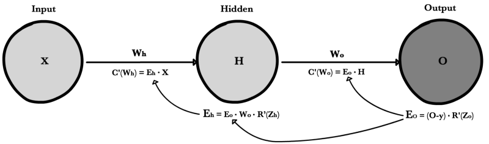

Lecture: Coding the (Easy) Calculus of Neural Networks
Programming a neural network from scratch in Python
In collaboration with CPP Hyperloop, we'll be delivering a lecture/workshop where we'll go over:
Outline
- What a neural network is
- How and why neural networks are used in software
- The mathematical foundation of a neural network (it's really just derivatives from calculus I)
- How to make an autograd engine, a program capable of taking derivatives, in Python
- How to use an autograd engine to build a neural network
- Where: Cal Poly Pomona, Building 9, Room 9-423
- When: Friday, September 30th 2022, 6:00-8:00pm
Key information
*A recording may be posted if it turns out good, but no promises.
RSVP
(coming)